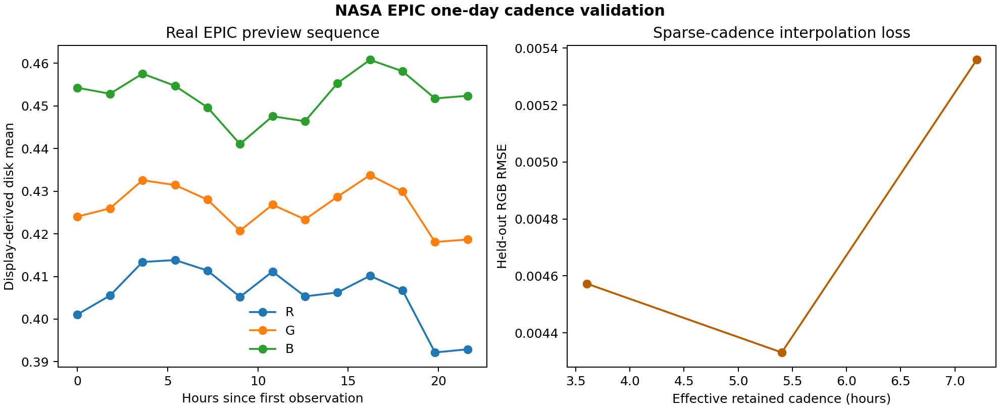

Epic cadence validation
SHA-256, LF-normalised text
0741e93fb26824af222ed0167a01131c114b6560e96833315d7f0f48a3039d2eBrowse 5 versioned evidence files. Table previews simply display stored rows. Consult the project report for the source, processing steps, and inference assumptions.

0741e93fb26824af222ed0167a01131c114b6560e96833315d7f0f48a3039d2e| stride | retained | omitted | effective_gap_hours | rgb_rmse | maximum_absolute_rgb_error |
|---|---|---|---|---|---|
| 2 | 7 | 6 | 3.601111111111112 | 0.004572741915282381 | 0.007663565761665991 |
| 3 | 5 | 8 | 5.401666666666667 | 0.004331080422227859 | 0.008903778063454493 |
| 4 | 4 | 9 | 7.202222222222224 | 0.005358807819768078 | 0.010024640447358235 |
5120d65509f3e0809469b47f7d75a7c3f5c128f1f66dc91e199b5812f75e3ba61abc32545b28a9ba8608e5d0b8547013503d6c6c500b92762bd9d459d316bbd44824c40dbe7569ec2741a1361d155b5c9ba53df37c39bdd9f9f460ddc00b00f4ddfc806977e4bcdf379a4251619f3dee02cd833245efe47ab0c070238bd47b93SHA-256 values verify the stored files. They do not independently validate the scientific analysis. Rebuild this page with python scripts/evidence_catalog.py followed by python scripts/render_evidence_page.py.